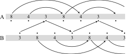

Happy 423 Day: 423-like passing pattern
April 2020
April 23rd: a jugglable date. Juggling is fun, juggling with numbers: even more. The notation called siteswaps, describing juggling patterns as a sequence of number is well known among jugglers. In this notation, numbers representing the time interval of \(n\) beats of an object staying in the air, before landing. Sequences of numbers are encounter in our daily life, and some of them are even jugglable. In this manner, the date of April 23rd notated in numbers (423) is a valid juggling pattern. It looks as follows:

What if we do not want to juggle alone? Can we take more than one juggler into consideration and transform this siteswap into a passing pattern? Yes, we can! However, we do not want to split this 3-object pattern among \(j\) jugglers, but rather maintain the 423-like feeling individually and combine this with passing. Let us keep the 4-throw and the 2-throw for each juggler, but consider the 3-throw as a global throw. We consider 2 jugglers for this. We split the global 3-throw between the 2 jugglers, which makes it a 1.5-throw for each juggler. Hence, juggler \(A\) will throw the sequence 4 2 1.5, where 1.5-throws are cross throws. To achieve this, we consider the global pattern 834, which will be split between the two jugglers. Juggler \(A\) will throw 843 and juggler \(B\) 384.

We can then divide the global pattern by 2 to transform it into the local patterns. This results in the sequence 4 2 1.5 for juggler \(A\) and 1.5 4 2 for juggler \(B\).
Table 1. Local sequence representation. Note that the 1.5-throws from juggler \(A\) are thrown as cross-throws, while \(B\) throws the 1.5-throws straight.
| Beats | ||||||
| 1 | 1.5 | 2 | 2.5 | 3 | 3.5 | |
| Juggler A | \(4\) | \(2\) | \(1.5_\times\) | |||
| Juggler B | \(1.5_{||}\) | \(4\) | \(2\) | |||
The ladder diagram looks then as follows:
An 8-throw will land on a juggler's hand after 8 beats, when we take the actions of both jugglers into account. However, considering just the actions of juggler \(A\), the object will land after 4 beats as shown in the local sequence representation above. The mean of the pattern 834 equals 5, which will give us the number of objects needed for this pattern. Juggler \(A\) starts with 3 objects, while juggler B has 2. However, this pattern could also be juggled by just one person as shown in following animation:

The lowest throw (the 3-throw) is the equivalent to the pass-throw in a passing setup, while as equal-numbered throws (4- and 8-throws) would be self-throws of juggler \(A\) or juggler \(B\) respectively. Note, that the W-shape like form of the pattern remains unchanged.
Taking a valid siteswap \(s\), we can tranfer it to a passing pattern, which persists its characteristics. This can be done by selecting \(n\) throws from \(s\) and split them amoung \(j\) jugglers. The resulting pattern can be in turn considered for just one juggler, with an increased amount of juggled objects, but maintained characteristics from the original.
Have fun trying out some transformations! ;)